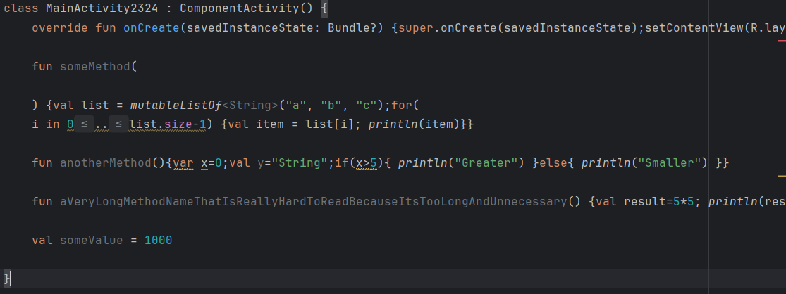
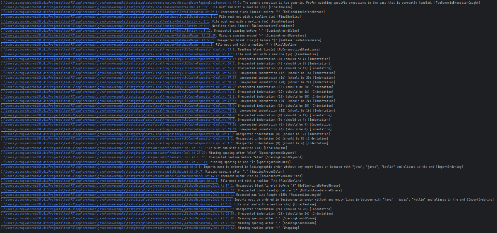

Directed by Sutugin Alexander
Чтобы код не выглядел так:

# Включаем Detekt в Gradle
plugins {
id "io.gitlab.arturbosch.detekt" version "1.23.0"
}
detekt {
config = files("detekt.yml")
}
А потом Detekt сказал ...
И это лишь 1/40 того что он выдал ...
class TrailingCommaRule(config: Config = Config.empty) : Rule(config) {
override val issue = Issue(
id = this.javaClass.simpleName,
severity = Severity.Style,
description = "Checks for correct trailing comma usage.",
debt = Debt.FIVE_MINS
)
override fun visitKtFile(file: KtFile) {
super.visitKtFile(file)
file.accept(TrailingCommaVisitor(this))
}
}
class TrailingCommaVisitor(private val rule: Rule) : KtVisitorVoid() {
override fun visitValueArgumentList(list: KtValueArgumentList) {
checkTrailingComma(list)
super.visitValueArgumentList(list)
}
override fun visitParameterList(list: KtParameterList) {
checkTrailingComma(list)
super.visitParameterList(list)
}
override fun visitCollectionLiteralExpression(expression: KtCollectionLiteralExpression) {
checkTrailingComma(expression)
super.visitCollectionLiteralExpression(expression)
}
private fun checkTrailingComma(element: PsiElement) {
val lastChild = element.lastChildIgnoringWhitespaceAndComments
val hasTrailingComma = lastChild?.node?.elementType == KtTokens.COMMA
val shouldHaveTrailingComma = when (element) {
is KtValueArgumentList -> element.arguments.size > 1
is KtParameterList -> element.parameters.size > 1
is KtCollectionLiteralExpression -> element.getInnerExpressions().size > 1
is KtEnumEntry -> true
else -> false
}
if (shouldHaveTrailingComma && !hasTrailingComma) {
rule.report(
CorrectableCodeSmell(
rule.issue,
Entity.from(element),
"Missing trailing comma",
autoCorrect = true
) {
val psiFactory = KtPsiFactory(element.project)
val comma = psiFactory.createComma()
element.add(comma)
}
)
} else if (!shouldHaveTrailingComma && hasTrailingComma) {
rule.report(
CorrectableCodeSmell(
rule.issue,
Entity.from(lastChild!!),
"Unnecessary trailing comma",
autoCorrect = true
) {
lastChild.delete()
}
)
}
}
}
local config
global config
io.gitlab.arturbosch.detekt.api.RuleSetProvider
try {
riskyOperation()
} catch (e: Exception) { }
KtTryExpression (try { riskyOperation() } catch (e: Exception) { })
├── KtBlockExpression ({ riskyOperation() })
│ └── KtCallExpression (riskyOperation())
│ ├── KtNameReferenceExpression (riskyOperation)
├── KtCatchClause (catch (e: Exception) { })
│ ├── KtParameter (e: Exception)
│ │ ├── KtNameReferenceExpression (Exception)
│ ├── KtBlockExpression ({ })
class EmptyCatchBlock(config: Config) : Rule(config) {
override fun visitTryExpression(expression: KtTryExpression) {
expression.catchClauses.forEach { catchClause ->
val catchBody = catchClause.catchBody
if (catchBody?.children?.isEmpty() == true) {
report(
CodeSmell(
issue,
Entity.from(catchClause),
"Пустой блок catch"
)
)
}
}
}
}
task generateDetektBaseline {
doLast {
val baselineFile: File = file("$rootDir/config/detekt/detekt-baseline.xml")
if (baselineFile.exists()) {
baselineFile.delete()
}
baselineFile < < "\n"
subprojects.forEach { project ->
def projectBaselineFile : File = file ("$(project.projectDir]/detekt-baseline.xml")
if (projectBaselineFile.exists()) {
def lines : List < String > = projectBaselineFile.readLines()
def content : List < String > = lines.subList(2, lines.size() - 1)
baselineFile < < content . join ("\n") + "\n"
}
}
baselineFile < < " \n"
println("Coздан oбщий Baseline файл для Detekt plugin")
}
}
Можно отключить прехуки
Решение: Поставить доп проверку на этапе сборки на Jenkins-е
С увеличением кодовой базы, увеличиваются бейзлайны
Решение: Исключать слишком жестокие правила
Решение: Расширяем пайплайн, добавлением Detekt-a